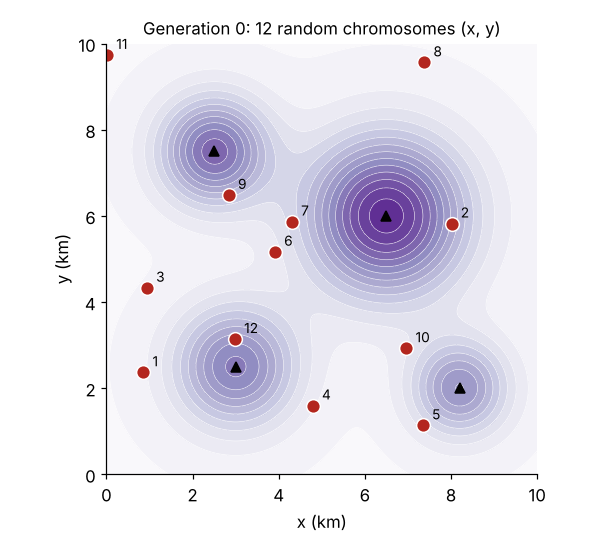
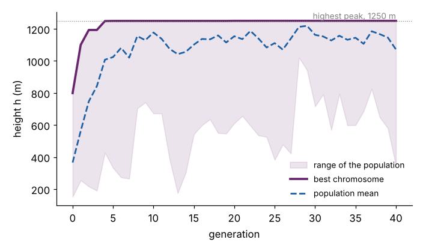

ENGI 1151 · Computational Tools for Engineers and Scientists · Week 8
Advanced optimisation: the genetic algorithm
Dr Nima Gerami Seresht · Department of Engineering · Durham University
Python: loading…
Full notes, worked code and the practice notebook: week8.html
1
Why do we need more than gradients?
1What we have so far
analytical methoditerative methodlocal search
Analytical (closed form)
Solve \(f'(x) = 0\) or \(\nabla f = \mathbf{0}\) by hand.
Exact, and fast when it works.
Needs a formula we can differentiate and equations we can solve.
Iterative (gradient descent, Newton)
Start from a guess and step downhill (or uphill) using the slope: \(\mathbf{x}_{k+1} = \mathbf{x}_k - \alpha\nabla f(\mathbf{x}_k)\).
Works with any differentiable function, in many variables.
A local search: it follows the ground under its feet from one starting point.
Both look only at the neighbourhood of a single point. On a mountain range with many peaks, that is a serious limitation.
1.1Trap 1: the nearest peak is not the highest
local optimumglobal optimumbasin of attraction
Each hiker uses gradient ascent from a random start, with at most 150 steps. The highest peak (1250 m) is at (6.5, 6.0); three lower peaks are local optima.
A problem-specific strategy, based on domain knowledge, that finds a good solution quickly.
“Space wind turbines 7 rotor diameters apart along the wind.”
“Visit the nearest unvisited site next” (route planning).
“Size the beam for deflection first, then check stress.”
Fast and sensible, but no guarantee of the optimum, and it does not transfer to other problems.
Metaheuristic: a strategy for searching
A general-purpose search framework that guides a search towards optimal or near-optimal solutions of any problem.
Treats the objective as a black box: give it \(\mathbf{x}\), get back \(f(\mathbf{x})\).
Uses many candidate solutions and randomness to explore.
Often inspired by nature: evolution, swarms, annealing metal, ants.
No guarantee of the global optimum, but usually a very good solution in reasonable time.
2.2Four families of methods
guaranteederivativesglobal search
Analytical
Iterative (gradient)
Heuristic
Metaheuristic
Needs a formula
yes
yes (or a gradient)
no
no: values of \(f\) only
Needs derivatives
yes
yes
no
no
Searches
exactly
locally, one point
by a rule
globally, a population
Finds
the global optimum
a local optimum
a good solution
a (near-)global optimum
Variable types
continuous
continuous
any
any: real, integer, yes/no
Problem-specific
yes
no
yes
no
Cost
tiny
low
tiny
many evaluations of \(f\)
Metaheuristics trade computing time for robustness: thousands of evaluations of \(f\) instead of a few gradient steps.
2.3Metaheuristics: exploration and exploitation
explorationexploitationpremature convergence
Genetic algorithm (GA): evolution by natural selection. This week.
Particle swarm optimisation (PSO): a flock of birds searching together. Next week.
Simulated annealing (SA): the slow cooling of metal; sometimes accepts a worse solution to escape a local optimum.
Ant colony optimisation (ACO): ants laying pheromone trails; routing and scheduling.
Exploration: search widely, find new promising regions, escape local optima.
Exploitation: refine the best solutions found so far, converge.
Too much exploration: no convergence, wasted evaluations. Too much exploitation: premature convergence to a local optimum.
3
The genetic algorithm: evolution as optimisation
3.1Natural selection as a search
survival of the fittestgenerationoffspring
In nature, individuals that suit their environment better survive longer and have more offspring. Offspring inherit a mix of their parents’ genes, with occasional random mutations. Over many generations the population adapts.
The genetic algorithm (Holland, 1975) copies this process: a population of candidate solutions evolves, generation after generation, towards better and better solutions.
Biology
Genetic algorithm
individual
a candidate solution
chromosome
the encoded solution, a string of values
gene
one decision variable
population
a set of candidate solutions
fitness
the value of the objective function
survival of the fittest
selection of the best as parents
mating, inheritance
crossover of two parents
mutation
a random change to a gene
generation
one iteration of the algorithm
3.2Chromosomes: encoding a solution
chromosomegeneencodingpopulation
A chromosome is one candidate solution written as a string of values. Each value is a gene: one decision variable.
The number of genes = the number of decision variables. The mountain needs 2 genes; a truss with 30 members needs 30.
Genes can be any type: real numbers, integers, items from a list, yes/no. This is a big advantage over gradient methods.
The fitness of a chromosome is the objective function evaluated at it. The GA never needs a derivative: only this number.
3.3Crossover: two parents, two children
crossovercut pointoffspring
Crossover is the heart of the GA: children combine good parts of good parents. Each child keeps the parents’ genes in the same positions.
4
The building blocks of a GA
4.1The genetic algorithm in one picture
generationloopstopping criterion
Create a random population of chromosomes.
Evaluate the fitness of each one and rank them.
If the stopping criterion is met, stop.
Select parents, the fitter the more likely.
Cross over pairs of parents to make children.
Mutate a few genes at random.
Keep the best (elitism): the new generation. Back to step 2.
Steps 2 to 7 are one generation. The population size stays constant.
4.2Random initialisation and the population
random initialisationpopulation sizediversity

Generation 0: each gene is drawn at random between its lower and upper bounds, e.g. np.random.uniform(0, 10, (12, 2)).
Random points are spread over the whole landscape: the GA starts by exploring everywhere, not from one guess.
The population size (typically 20 to 200) controls the balance:
small: fast generations, little diversity, risk of premature convergence;
large: explores better, but each generation costs more evaluations of \(f\).
Cost of a run ≈ population size × number of generations evaluations of \(f\).
Selection pressure: how strongly the best are favoured. High pressure (truncation, large tournaments) converges fast but loses diversity; low pressure (roulette, rank) keeps weaker chromosomes in the game and explores more.
4.4Elitism: never lose the best
elitismelitemonotonic best
Crossover and mutation can destroy a good chromosome: its children may all be worse. Without protection, the best solution found so far can be lost.
Elitism: copy the best one or few chromosomes (the elite) unchanged into the next generation.
The best fitness then never decreases from one generation to the next. Usually 1 or 2 elites; too many reduce diversity.
The same GA on the mountain, 100 runs each: with two elites the best chromosome climbs higher.
4.5Crossover operators
single-pointtwo-pointuniformcrossover probability
Crossover is applied to a pair of parents with a crossover probability (often 0.7 to 0.9); otherwise the children are copies of the parents. With only two genes, as on the mountain, there is one possible cut: the children are \((x_A, y_B)\) and \((x_B, y_A)\).
4.6Mutation: keeping the population diverse
mutationmutation ratediversityrandom reset
Crossover only reshuffles genes that are already in the population. If no chromosome has a good value of \(y\), crossover can never create one.
Mutation changes a few genes at random after crossover. It brings new values into the population and maintains diversity.
The mutation rate is small: typically 1 to 10 % of the genes. Too high and the GA becomes a random search; too low and the population collapses onto one point.
4.7Convergence: when to stop
convergencestopping criterionstagnation

Over the generations the population converges: the chromosomes gather around the best region and the best fitness levels off.
Stopping criteria (the handout):
a maximum number of generations, or
no improvement of the best fitness for a set number of generations (stagnation), or
a target fitness is reached.
The population mean stays below the best: mutation keeps throwing in worse chromosomes, which is the price of exploration.
5
A genetic algorithm on the mountain
5.1Watch the population climb
selectioncrossovermutationelitism
5.2The GA is a discrete search
discrete searchrepeatabilityrandom seedhybrid
10 runs, 20 chromosomes, 40 generations each. Nine land within about 0.05 km of the summit, all at different points; run 8 stalls on the shoulder at 1023 m.
Gradient methods move a point in small, continuous steps until the slope is zero.
Crossover does not change numbers, it exchanges them: children are made of values that already exist. New values only come from random mutation jumps. The GA samples the landscape in discrete jumps.
Consequences on a continuous problem like the mountain:
10 runs give 10 different answers: close, but not the same;
the answer is near the optimum, not exactly on it;
use random_seed to make a run repeatable.
Tip: polish the GA’s answer with a gradient method (a hybrid): the GA finds the right peak, the gradient climbs to its exact top.
6
Genetic algorithms in Python: PyGAD
6.1The PyGAD library
pygad.GAfitness_funcrun()best_solution()
Argument of pygad.GA(…)
Meaning
fitness_func
function f(ga_instance, solution, solution_idx) returning the fitness
num_genes
genes per chromosome = number of variables
sol_per_pop
population size
num_generations
maximum number of generations
num_parents_mating
number of parents selected
init_range_low, init_range_high
range of the random initial genes
gene_space
allowed values or range of each gene (optional)
parent_selection_type
"sss", "rws" (roulette), "rank", "tournament", …
keep_elitism
number of elite chromosomes
crossover_type
"single_point", "two_points", "uniform"
mutation_type, mutation_percent_genes
"random", …; percentage of genes mutated
random_seed
makes a run repeatable
Install once: pip install pygad (in a notebook: %pip install pygad).
Three steps: create a pygad.GA object, call .run(), read .best_solution(), which returns the best chromosome, its fitness and its index.
PyGAD maximises the fitness, unlike scipy.optimize, which minimises. To minimise \(f\), return \(-f\) from the fitness function.
import numpy as np
import pygad
def fitness(ga_instance, solution, solution_idx):
x, y = solution
f = ((x - np.pi)**2 + (y - np.pi/2)**2 + np.sin(3*x + np.pi/3)
+ np.sin(4*y - np.pi/4) * np.exp(-((x - 3)**2 + (y - 3)**2)))
return -f
print("run x y f(x, y)")
for run in range(1, 11):
ga_instance = pygad.GA(num_generations=100, num_parents_mating=10,
sol_per_pop=12, num_genes=2, fitness_func=fitness,
init_range_low=-10, init_range_high=10,
parent_selection_type="rank", keep_elitism=1,
mutation_percent_genes=50, suppress_warnings=True)
ga_instance.run()
s, fit, _ = ga_instance.best_solution()
print("%3d %8.4f %8.4f %10.5f" % (run, s[0], s[1], -fit))
Exact minimum: \(x^* = 3.2799\), \(y^* = 1.5500\), \(f^* = -1.06076\). Every run lands near it, never exactly on it, and never twice at the same point.